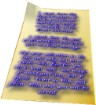
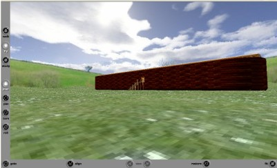
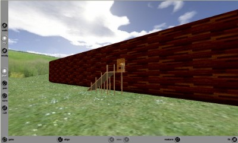
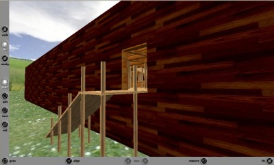
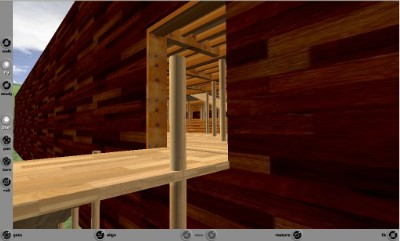
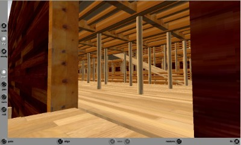
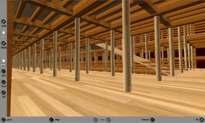

Tim Skillman:
"I write 3D computer software (for the UK ) and model in 3D for a
real-estate company in the US. I’m a born-again Christian who has been
pastoring a church in the Seychelles (we’re taking a break for now). My
wife, Pam, is Seychellois whereas I’m from England. We have 3 children;
Shem(6), Rebekah(3) and Esther(1) who are a handful! I’ve been living in
Seychelles for the past 13 years.
Thought you might be interested in wandering around a high-detailed version
of Noah’s ark that includes Noah’s living quarters and a couple of
elephants. It’s all in VRML, so you’ll need the Cortona browser before you
try …"
Download and install the Cortona VRML viewer. (www.parallelgraphics.com)
then go to Tim's website to walk around the model. (www.skillmanmedia.com/vrml/noahs_ark/ark_scene.wrl)

QUEST: Can you read Noah's letter above? Go inside yourself and find it...
I created the model in 3DS Max and scaled to the standard cubit so it’s the smaller version of the Ark |
 |
– it could easily be scaled up to the Royal cubit. |
 |
(Approaching by "fly" mode, not "walk" mode...) |
 |
Idea … what would be fun, is for people to donate a 3D animal model to put into the Ark, |
 |
... I hope to eventually fill it out to get a real feel of what it must have been like. |
 |
I hope this model may help to solve some of these questions plus draw a few conclusions Regards - Tim. |
 |